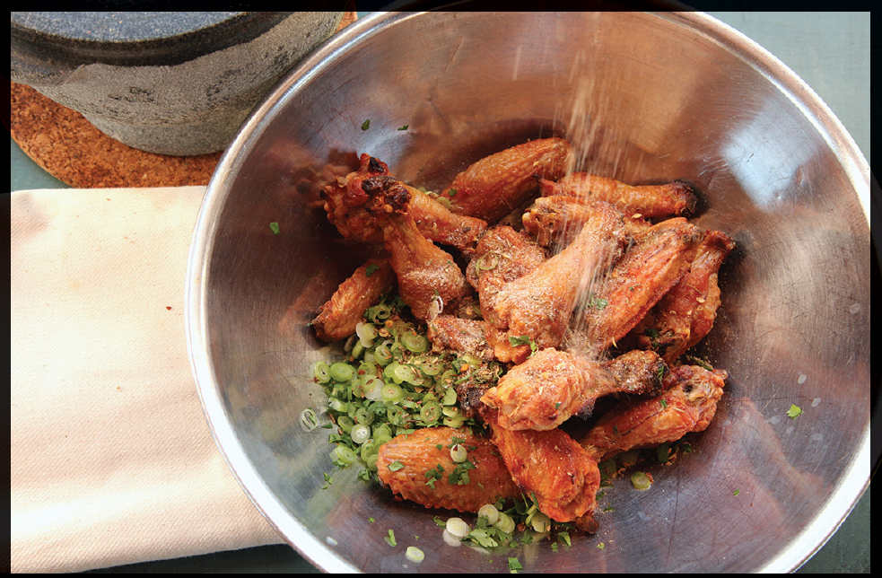

MÁLÀ SALT AND PEPPER CHICKEN WINGS
|
Yield Serves 4 to 6 |
Active Time 30 minutes Total Time 30 minutes |
This recipe makes more toasted málà salt than you need. Save it for another use (it’s an excellent rub for roasted or smoked meats, for grilled or broiled vegetables or tofu, or sprinkled on any fried foods). The used oil can be strained and saved for another use.
INGREDIENTS
For the Wings:
1½ pounds (700 g) chicken wings, separated into drums and flats
1 tablespoon (12 g) kosher salt
½ cup (60 g) potato starch
For the Toasted Málà Salt:
1 tablespoon (6 g) whole cumin seeds
1 tablespoon (3 g) red or green Sichuan peppercorns
2 teaspoons (4 g) fennel seeds
1 teaspoon (2 g) white peppercorns
1 star anise pod, broken into pieces, dark seeds discarded
4 small hot dried chiles, such as chao tian jiao, árbol, or Japones
2 tablespoons (24 g) kosher salt
2 tablespoons (25 g) light or dark brown sugar
To Cook:
3 quarts (3 l) peanut, rice bran, or other neutral oil
4 scallions, thinly sliced
Handful of fresh cilantro leaves and fine stems, roughly chopped
These deep-fried crunchy chicken wings get tossed in a hot-and-numbing toasted spice and salt mixture with a hint of sweetness that draws inspiration from some of the street snacks in Sichuan and Shaanxi. For the spice coating, I toast cumin, fennel, star anise, white pepper, Sichuan peppercorns, and whole dried chiles with salt in a dry wok until intensely aromatic, then grind them and combine them with brown sugar.
Incidentally, this mixture makes a wonderful barbecue rub for slow-smoked ribs or pork shoulder.
DIRECTIONS
1 For the Wings: In a large bowl, toss the wings with the salt until well coated. Add the starch and toss until the wings are coated. Place in a fine-mesh strainer held over the sink and shake to remove excess starch. Arrange wings in a single layer on a baking sheet and set aside.
2 For the Toasted Málà Salt: Combine the cumin, Sichuan peppercorns, fennel, white peppercorns, star anise, chiles, and salt in a wok. Heat over medium heat, tossing and stirring frequently, until very toasty and fragrant, 7 to 10 minutes. Note that this may create some smoke, so use a vent hood if you have one, or at the very least get a good cross-breeze going through your kitchen space.
3 Transfer to a large plate or tray and let cool completely. Transfer to a heavy mortar and pestle or a spice grinder and grind into a powder. Let cool completely, then add the brown sugar and toss to combine.
4 To Cook: Heat the oil to 400°F (205°C) in the wok. Add the chicken wings, agitating with a spider or chopsticks to separate the wings. Adjust the heat to maintain a temperature of 325° to 350°F (160° to 175°C) as the wings cook, agitating and moving them regularly until they are golden brown and very crisp, about 8 minutes. Drain the chicken, then transfer to a large bowl.
5 Add the scallions and cilantro and season generously with the spice mixture as you toss everything together. Serve immediately.
